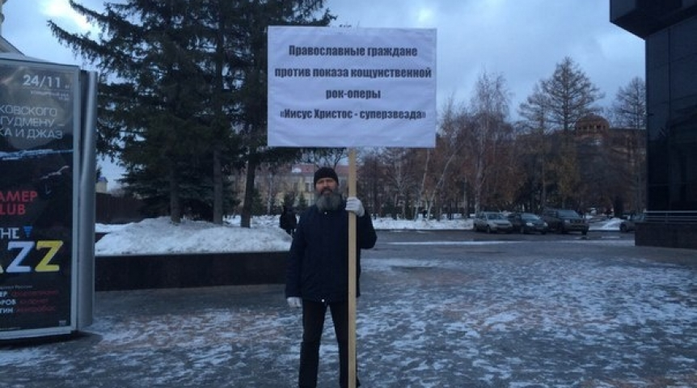

Сотрудники омского регионального отделения МОД «Семья, любовь, Отечество» приветствует вас.
Наверное, вы знаете, что в Омске, из-за протеста православных верующих, был отменен показ кощунственной рок-оперы «Иисус Христос - суперзвезда», показ которой был запланирован на 01.11.2016 г.
С этим богохульным произведением к нам вновь хотел приехать Санкт-Петербургский театр «Рок-опера», который уже был в нашем городе год назад.
8 декабря 2016
Олег Кассин: Общественность имеет право высказывать свое мнение по поводу качества предъявляемой ей культурной продукции!
О «запрете» рок-оперы «Иисус Христос – суперзвезда»,
и о чём в реальности говорилось на совместном заседании
Совета по культуре и искусству и Совета по русскому языку

5 ноября 2015
Общественность выступила против показа в Омске рок-оперы «Иисус Христос – суперзвезда»
В Омске прошел одиночный пикет православных христиан против показа рок-оперы